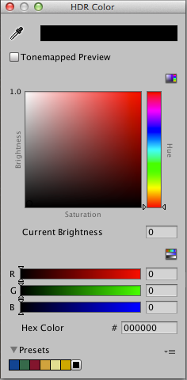

HDR color picker
The HDR Color picker looks similar to the ordinary Color picker, but it contains additional controls for adjusting the color’s exposure.

| Property: | Function: |
|---|---|
| Mode (default: RGB 0-255) |
When using HSV or RGB 0-255 mode, the color picker treats exposure adjustments independently from color channel data. However, the color channel data displayed in RBG (0-1.0) mode reflects the results of your exposure adjustment on the color data. Unlike the ordinary color picker, you can directly enter float values greater than 1.0 when editing color channels in RGB 0-1.0 mode. In this case, the color picker derives the Intensity value automatically from the value you set. |
| RGBA | Use the slider or text box to define a RGBA value. The Hexadecimal value automatically updates to reflect the RGBA values. |
| Hexadecimal | Use the text box to define a hexadecimal value. The RGBA values automatically update to reflect the hexadecimal value. |
| Intensity | Use the Intensity slider to overexpose or underexpose the color. Each positive step along the slider provides twice as much light as the previous slider position, and each negative step provides half as much light. |
| Swatches | Use the exposure swatches under the Intensity slider to preview what the current color value looks like within a range of two steps in either direction. To quickly adjust the color’s exposure, click a preview swatch. |
Whenever you close the HDR Color window and reopen it, the window derives the color channel and intensity values from the color you are editing. Because of this, you might see slightly different values for the color channels in HSV and RGB 0-255 mode or for the Intensity slider, even though the color channel values in RGB 0-1.0 mode are the same as the last time you edited the color.